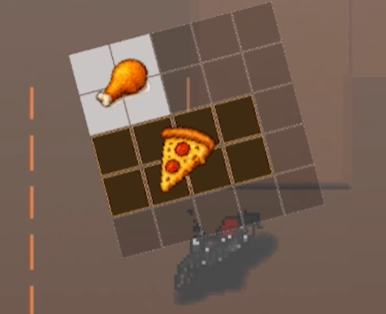

배달왕 김족구
주문을 받아 가방에 음식을 실어 배달하는 3D 어드벤처입니다. 가방 공간을 어떻게 쓰느냐가 곧 플레이입니다.
- 장르
- 배달 어드벤처
- 엔진 · 언어
- Unity 6 · C# · Yarn Spinner
- 규모 · 기간
- 3인 창업 팀 · 2026.01–06 (개발 01–04)
- 담당
- 인벤토리 · 대화 연동 · 배달 도메인
어떤 게임인가
NPC에게 주문을 받고, 치킨·피자 같은 음식을 가방에 넣어 목적지까지 배달합니다. 가방은 테트리스처럼 칸을 차지하는 격자라, 무엇을 어떻게 넣느냐가 한 번에 받을 수 있는 주문 수를 결정합니다.
제 담당은 가방(인벤토리) 설계와 구현, 대화 시스템 연동과 선택지 UI, 그리고 배달 도메인 재설계입니다.
퀘스트 프레임워크와 마우스·게임패드 입력 체계는 팀원이 설계한 것이며,
저는 그 위에서 확장하는 쪽을 맡았습니다. 기여 범위는 저장소 README에
git blame 기준으로 정리해 두었습니다.
테트리스형 그리드 인벤토리
음식마다 차지하는 칸 모양이 다르고, 회전해서 끼워 넣을 수 있습니다.
구현
InventoryModel이 2차원 배열로 점유 상태를 관리하고, 변경이 생기면 이벤트만 발행합니다. 뷰는 그 이벤트를 받아 그릴 뿐 모델을 역참조하지 않습니다 — 이벤트 기반 MVC입니다.- 배치 가능 여부는 격자 위에서 즉시 표시됩니다(밝은 칸이 놓을 수 있는 자리).
- 담당 파일 —
InventoryModel,InventoryController,InventoryState,IInventoryInputProvider.
화면

같은 아이템을 회전시켜 다른 방향으로 끼워 넣은 화면. 사진 1과 나란히 놓이면 “회전을 상태로 늘리지 않았다”는 설명이 눈으로 보입니다. 배치가 막히는 순간(붉게 표시되는 자리)이 있으면 그것도 좋습니다.
어려움
- 문제
- 아이템을 회전시킬 수 있게 하자 충돌 판정이 급격히 복잡해졌습니다. 같은 아이템인데 방향마다 차지하는 칸 모양이 달라, 판정 코드에 분기가 계속 늘었습니다.
- 원인
- 회전을 별개의 상태로 취급했기 때문입니다. 방향이 늘어날 때마다 "이 방향이면 이렇게 검사한다"가 하나씩 붙는 구조였습니다.
- 해결
- 회전 상태를 늘리는 대신
EffectiveSize라는 파생 속성을 두어, 현재 회전값에서 실제 차지하는 크기를 계산해 내도록 바꿨습니다. 판정 코드는 그 값 하나만 보면 되므로 방향에 따른 분기가 사라졌습니다.
성과
마우스와 게임패드를 같은 코드로
인벤토리 컨트롤러가 입력 방식을 모르게 만들었습니다.
구현
- 팀이 구축해 둔 마우스·게임패드 입력 체계 위에 인벤토리 조작을 연결했습니다.
- 입력 종류에 의존하지 않도록
IInventoryInputProvider로 추상화하고, 구현체를 입력 방식별로 두었습니다.
화면
같은 인벤토리를 마우스로 끌 때와 게임패드로 칸 사이를 이동할 때의 커서 표시 차이. 두 장을 나란히 놓으면 추상화가 무엇을 흡수했는지 보입니다. 없으면 이 칸은 비워도 됩니다.
어려움
- 문제
- 마우스와 게임패드는 커서가 움직이는 방식 자체가 다릅니다. 마우스는 픽셀 단위 연속 좌표를 갖고, 게임패드는 UI 요소에서 요소로 건너뜁니다. 인벤토리 코드에 두 경우가 섞이기 시작했습니다.
- 원인
- 컨트롤러가 입력 장치를 직접 알고 있었기 때문입니다. 장치가 늘어날 때마다 조작 로직 전체에 분기가 퍼집니다.
- 해결
IInventoryInputProvider뒤로 그 차이를 숨겼습니다. 연속 좌표든 이산 이동이든 인터페이스 밖으로는 “지금 어느 칸을 가리키는가”만 나옵니다. 컨트롤러는 입력 방식을 알 필요가 없어졌습니다.
성과
대화 연동과 배달 도메인 재설계
남이 만든 퀘스트 프레임워크를 고치지 않고 확장했습니다.
구현
- Yarn Spinner로 대화를 작성·재생하고, 선택지 UI와 게임 상태를 연결했습니다.
- 배달 진행 상황을 퀘스트 프레임워크에 이벤트로 보고하도록 해 결합도를 낮췄습니다.
- 배달 도메인을 NPC 기반에서 장소 기반으로 재설계했습니다. “누구에게”가 아니라 “어디로”가 조건이 됩니다.
화면
어려움
- 문제
- 배달 조건이 NPC에 묶여 있어 확장이 막혔습니다. 한 장소에 여러 주문을 묶거나 NPC를 바꾸는 일이 매번 조건 추가로 이어졌습니다. 그렇다고 팀원이 설계한 퀘스트 프레임워크를 제가 고칠 수는 없었습니다.
- 원인
- 도메인 모델이 잘못 잡혀 있었습니다. 플레이어가 실제로 하는 일은 “누구를 만나는 것”이 아니라 “어디로 가는 것”인데, 조건은 사람에 붙어 있었습니다.
- 해결
- 도메인을 장소 기준으로 다시 짜 NPC 종속 조건 4종을 제거했습니다. 프레임워크 자체는 건드리지 않고, 열어둔 확장 지점인
QuestAction에 새 액션을 추가하는 방식으로만 연결했습니다.
성과
범위와 한계
3인 창업 팀의 프로젝트이며, 퀘스트 프레임워크와 마우스·게임패드 입력 체계는 팀원이 설계한 것입니다.
제 담당은 인벤토리, 대화 연동, 배달 도메인이고 기여 범위는 저장소 README에
git blame 기준으로 정리해 두었습니다. 기획과 아트는 팀의 것입니다.